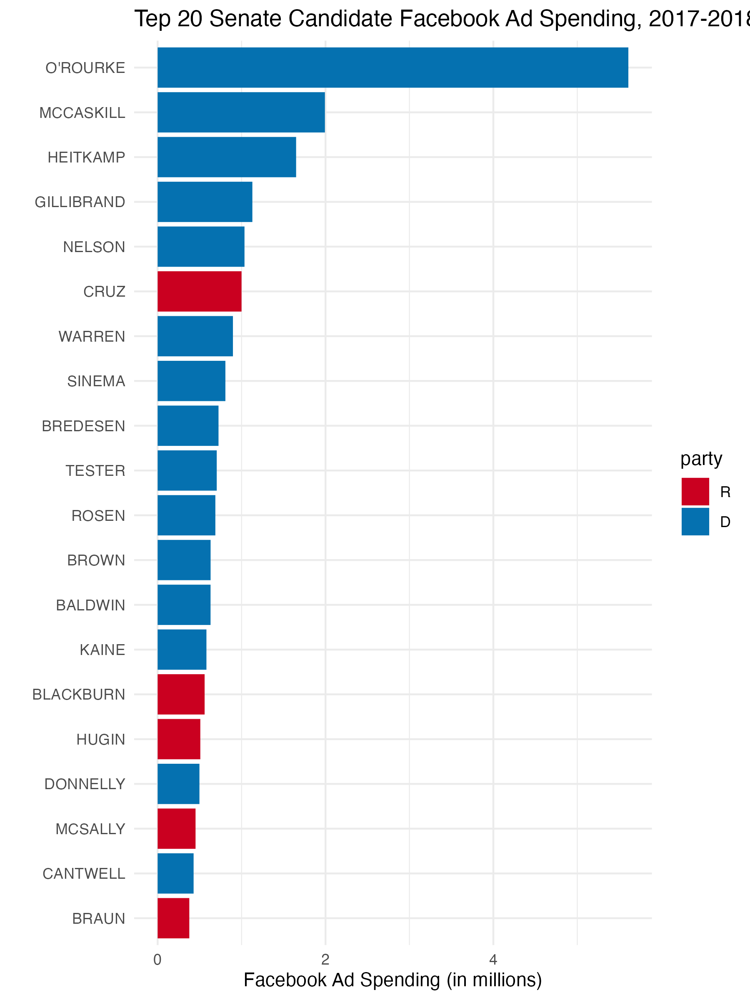

knitr::kable(my_table, col.names = c("Variable 1", "Variable 2", ...))Problem Set 2: Data Wrangling
Background
Political advertising has traditionally been focused on the medium of television, but in recent cycles, online advertising has become much more popular. In this problem set, you will explore a dataset that has information on Facebook ad spending by candidates in the 2018 election cycle in the United States. The variables in this data are described below.
| Name | Description |
|---|---|
cand_id |
unique identifier code for candidate |
cand_name |
full name of the candidate |
cand_name_last |
last name of the candidate |
party |
party affiliation of the candidate (R = Republican, D = Democrat) |
office |
office being sought by candidate |
state |
state in which the candidate is running |
incumbency |
incumbency status of candidate (incumbent, challenger, or open seat) |
spend |
estimated total spending on Facebook ads by candidate |
impressions |
estimated total impressions of Facebook ads |
ad_tone_attack |
proportion of FB ads that mention candidate’s opponent only |
ad_tone_promote |
proportion of FB ads that mention candidate only |
ad_tone_contrast |
proportion of FB ads that mention candidate and candidate’s opponent |
Question 1 (8 points)
Load the data using the read_csv function and save it as fb_ads (using this will automatically make fb_ads a tibble). In the text, describe how many candidates there are in the dataset.
Use dplyr functions to create a table with the number of candidates in each type of office in the data set. Save this table output as office_table (for the autograder). Use the function knitr::kable() on this table to have a nicely formatted table produced in the knitted output.
Rubric: 2pt for loading the data (autograder); 1pt for describing the number of candidates (PDF); 3pts for creating the table (autograder); 2pt for using kable() to nicely format the output (PDF)
Question 2 (7 points)
Filter the data to just US House and US Senate races and use this to create a tibble called office_incumbent_attack that has 6 rows that summarizes the average of ad_tone_attack for each combination of office and incumbent. Call the variable summarizing the attack variable as attack_prop and be sure to remove any missing values when computing the averages.
Use knitr::kable() to produce a nicely formatted table. In this call, set the digits arguments to 3 and use the col.names argument to pass a nicer set of names. You can use the following as a template:
In the writeup, describe which type of candidate sponsored the most attack ads on average.
Rubric: 3pts for creating office_incumbent_attack correctly (autograder); 2pt for a nicely formatted table (PDF); 1pt for changing the column names of the output table (PDF); 1pt for correctly identifying the type of candidate with highest average (PDF)
Question 3 (7 points)
Create a new variable called spend_millions that is the amount of money the candidate spent on Facebook ads in millions of dollars (as opposed to dollars). Make sure to save the resulting dataset back as fb_ads.
Create a histogram of this variable for just the US Senate races. Save the ggplot output as plot_q3 and also print it to produce a plot in the output. In the text, describe the shape of the histogram and tell the reader if most of the Senate candidates spent more or less than a million dollars on Facebook ads.
Rubric: 2pt for creating the new variable (autograder); 3pts for creating the histogram object (autograder); 2pts for answering the question about the histogram (PDF)
Question 4 (13 points)
Let’s now recreate the following plot that shows the top 20 Senate candidates in terms of Facebook ad spending.

You should save the ggplot output as fb_top_plot. The key features of this graph that you should replicate for the autograder are:
- The barplot should have candidate last names on the y-axis and the
spend_millionsvariable from question 3 on the x-axis. - The data feeding into the
ggplotcall should only have US Senate candidates and only the candidates with the highest 20spend_millionsvalues. - The y-axis should be ordered in ascending values of
spend_millionsso that the lowest values are at the bottom. You may want to manipulatecand_name_lastto achieve this. - The fill color of the bar plot should be mapped to the
partyvariable (but not globally!).
You do not need to exactly match the labels, but you should have informative labels. The color does not need to match, but if you want to change the fill colors, you can use the scale_fill_manual(values = c(R = "red", D = "blue")) function (where you can change the red and blue to whatever you want).
Rubric: 3pts for correct axes (autograder); 3pts for correct data fed into ggplot (autograder); 3pts for the correct ordering of the y-axis (PDF); 3pts for fill being mapped to party (autograder); 1pt for plot being in knitted output and having informative labels (PDF)